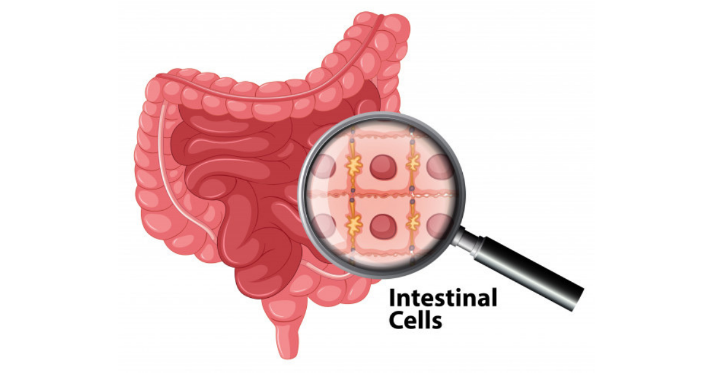

|
|
နှာခေါင်းထဲမှာ Ingrowth Hair (မွေးကျွတ်နာဖြစ်စေတဲ့ အမွေးတို) တွေ ပေါက်နေရင်ဘာလုပ်ကြမလဲကျွန်တော်တို့ခန္ဓာကိုယ်ပေါ်နေရာအနှံ့မှာ အမွှေးအမျှင်လေးတွေပေါက်နေပါတယ်။ အမွှေးအမျှင်တွေကို ရိတ်ပစ်တာ၊ ဇာဂနာနဲ့ဆွဲနှုတ်တာ၊ ဖယောင်းနဲ့ခွာတာ စတဲ့နည်းတွေနဲ့ ဖယ်ရှားနိုင်ပေမဲ့ နောက်ထပ်ပေါက်လာတဲ့အမွှေးအမျှင်တွေက အရေပြားထဲကို ပြန်လိပ်ဝင်သွားတဲ့အခါ Ingrowth Hair (မွေးကျွတ်နာဖြစ်စေတဲ့ အမွေးတို) တွေ ဖြစ်လာပါတယ်။ ဆံပင်ကောက်တဲ့သူတွေမှာ မွေးကျွတ်နာဖြစ်စေတဲ့ အမွေးတိုတွေ ပိုပေါက်တတ်ပါတယ်။ ဘာ့ကြောင့်လဲဆိုတော့ သူတို့ရဲ့ … |

|
အလိုလိုနေရင်း နှာခေါင်းထဲမှာ အနံ့အသက် ဆိုးဆိုးရနေပါသလားအမှိုက်ပုံနားဖြတ်သွားရင်ပဲဖြစ်ဖြစ်၊ အနီးအနားမှာ တိရစ္ဆာန်တစ်ကောင်ကောင်သေလို့ အပုပ်နံ့ထွက်လာတာပဲဖြစ်ဖြစ် နှာခေါင်းထဲမှာ ဆိုးဆိုးဝါးဝါးအနံ့ရတာ ပုံမှန်ပါပဲ။ သို့ပေမဲ့ အနံ့အသက်ဆိုးတွေက နှာခေါင်းအတွင်းပိုင်းထဲနေပဲ ထွက်လာတာမျိုးရော ဖြစ်နိုင်ပါသလား? တကယ်တော့ တချို့ကျန်းမာရေးအခြေအနေတွေမှာ နှာခေါင်းအတွင်းပိုင်းက အစိတ်အပိုင်းတွေ ပုံမှန် အလုပ်မလုပ်နိုင်လို့ နှာခေါင်းထဲကနေ အနံ့ဆိုးတွေထွက်လာနိုင်ပါတယ်။ ကံကောင်းတာက ဒီအခြေအနေအများစုက ယာယီသာဖြစ်ပြီး အသက်အန္တရာယ်မရှိပါဘူး။ အများအားဖြင့် နှာခေါင်းအတွင်းလမ်းကြောင်းထဲမှာ … |

|
သွားရေစာတွေကြောင့် ဆယ်ကျော်သက်တွေ ကြုံရနိုင်တဲ့ ပြင်းထန်တဲ့ဘေးထွက်ဆိုးကျိုးများအိမ်က ဆယ်ကျော်သက်လေးတွေအတွက် အိမ်မှာ သေချာ ပြုလုပ်ပေးထားတဲ့ အစားအစာတွေကိုပဲ ကျွေးဖို့ ကြိုးစားဖူးပါသလား။ အိမ်လုပ် အစားအစာပဲ စားပြီး သွားရေစာတွေ မစားဖို့ ဆယ်ကျော်သက်တွေကို တိုက်တွန်းမယ် ဆိုရင်တော့ အောင်မြင်ဖို့ ရာခိုင်နှုန်း တော်တော်ကို နည်းပါလိ်မ့်မယ်။ ဆယ်ကျော်သက်တွေအတွက် သွားရေစာဆိုတာ ခုံခုံမင်မင် စားတတ်ကြတဲ့ အစားအသောက်တွေပဲ ဖြစ်ပါတယ်။ … |
ကိုယ်ဝန်ဆောင် အစောပိုင်းကာလမှာ နေထိုင်ကောင်း၊ ကျန်းမာစေဖို့ကိုယ်ဝန်ဆောင်ချိန်မှာ ကိုယ့်ကိုကိုယ် ကျန်းမာအောင် ဂရုစိုက်တာဟာ မိခင််ရောကလေးပါ ကျန်းမာစေမယ့် အကောင်းဆုံး နည်းလမ်းတစ်ခု ဖြစ်ပါတယ်။ ကိုယ်ဝန်ဆောင်ချိန်မှာ ကောင်းကောင်း အနားယူဖို့လည်း လိုကို လိုအပ်ပါတယ်။ ဒါပေမဲ့ သင်က ကိုယ်ဝန်ဆောင်ချိန် ပျို့အန်မယ်၊ မအီမသာဖြစ်တာတွေကို ခံစားနေရခဲ့ရင်တောင် အိပ်ရာထဲမှာပဲ လှဲမနေဘဲ ပုံမှန်လမ်းလျှောက်တာ၊ သင့်တော်တဲ့ ကိုယ်လက်လှုပ်ရှားမှု ပြုလုပ်တာ … |

|
ကိုယ်ဝန်ဆောင်ချိန် ပျို့အန်ခြင်းကို သက်သာစေမယ့် အစားအစာများကိုယ်ဝန်ဆောင်ချိန်ဆိုတာကတော့ မိခင်လောင်းတွေရဲ့ ဘဝမှာ စိတ်လှုပ်ရှားစရာ အကောင်းဆုံး အချိန်လေးပါပဲ။ ဒီအချိန်လေးမှာမှ ကိုယ်ဝန်စဆောင်တဲ့ အချိန် အခိုက်အတန့်လေးကတော့ ပိုပြီး စိတ်လှုပ်ရှားစရာ ကောင်းနေမှာပါ။ ဒီလို အချိန်လေးတွေမှာပဲ ကိုယ်ဝန်ဆောင်ချိန် ပျို့အန်ခြင်းကလည်း ဖြစ်လေ့ရှိပါတယ်။ ကိုယ်ဝန်ဆောင်ချိန် ပျို့အန်ခြင်းဆိုတာကတော့ ကိုယ်ဝန်ဆောင်မိခင်တွေ ကြုံရလေ့ရှိတဲ့ လက္ခဏာတစ်မျိုးပဲ ဖြစ်ပါတယ်။ တချို့မိခင်လောင်းတွေကတော့ ဒီလက္ခဏာကို |

|
မနက်ခင်းမှာ လွယ်လွယ်ကူကူ လန်းလန်းဆန်းဆန်း နိုးထစေနိုင်ဖို့မနက်ခင်းဆိုတာ နေ့တစ်နေ့ရဲ့ အရေးအကြီးဆုံး အချိန်အခါပါ။ ဒီလိုအချိန်အခါမှာ လန်းလန်းဆန်းဆန်းနဲ့ နိုးထဖို့ အရေးကြီးပါတယ်။ ကိုယ့်ရဲ့နေ့တဓူဝ လုပ်ငန်းစဉ်လေးတွေကို နည်းနည်းလေး ပြောင်းလဲလိုက်တာကလည်း မနက်ခင်းမှာ စွမ်းအင်နဲ့ စိတ်ခံစားမှုကို မြှင့်တင်ပေးနိုင်ပါတယ်။ ဒါကြောင့် မနက်ခင်းမှာ လန်းလန်းဆန်းဆန်းနိုးထနိုင်ဖို့ လိုက်နာရမယ့် နည်းလမ်းလေးတွေကို မျှဝေလိုက်ပါတယ်။ (၁) နှိုးစက်ကို လက်လှမ်း မမှီရာမှာ … |
အိပ်နေစဉ် အသက်ရှူရပ်ရောဂါ ရှိသူတွေအတွက် အိမ်တွင်းနည်းလမ်း ၁၀ ခုSleep Apnea ဆိုတာ ဆေးပညာအရ “အိပ်နေစဉ် ရုတ်တရက် အသက်ရှူရပ်တန့်ခြင်း” လို့ခေါ်ပါတယ်။ အိပ်စက်နေတဲ့အခါမှာ အသက်ရှူလမ်းကြောင်း လေပြွန်ကျဉ်းလာလို့ မကြာခဏ အသက်ရှူ ရပ်ရပ်သွားတာ ဖြစ်ပါတယ်။ အိပ်နေတဲ့အချိန်မှာ ဟောက်တာ – Snoring နဲ့ ကွာခြားတာက ဟောက်တာက အသက်ရှူသွင်းလိုက်တဲ့အခါမှာ လေပြွန်ကျဉ်းနေတာကြောင့် … |

|
လက်ချောင်းလေးတွေကို ဒဏ်ရာအနာတရဖြစ်စေတဲ့ အကြောင်းရင်းများလက်ချောင်းနာကျင်တယ်ဆိုတာ အဖြစ်များပါတယ်။ လက်ချောင်းကျိုးတာ၊ လိမ်ပြီး ဒဏ်ဖြစ်သွားတာလိုမျိုး၊ ရုတ်တရက် ထိခိုက်ဒဏ်ရာရတာဖြစ်ဖြစ်၊ အဆစ်အမြစ်ရောင်ရောဂါလို နာတာရှည်အခြေအနေတွေဖြစ်ဖြစ် လက်ချောင်းတွေကို နာကျင်စေနိုင်ပါတယ်။ ဘာကြောင့်ဖြစ်လဲဆိုတဲ့ အကြောင်းရင်းကို သိထားမယ်ဆိုရင်တော့ ဘယ်လိုကုသမှုမျိုး ခံယူလို့ရမလဲဆိုတဲ့ အဆင့်ဆင့်ကို လုပ်ဆောင်နိုင်မှာပဲ ဖြစ်ပါတယ်။ (၁) အရိုးကျိုးခြင်း လက်ချောင်းရိုးက ပုံစံနဲ့ အရွယ်အစားမျိုးမျိုးနဲ့ ကျိုးနိုင်ပါတယ်။ လက်ချောင်းရိုးလေးတွေ ကျိုးတဲ့အခြေအနေအများစုက … |

|
ကိုယ်ဝန်ဆောင်ချိန် သွေးပေါင်ကျခြင်းကိုယ်ဝန်ဆောင်ချိန် သွေးပေါင်ကျခြင်း ကိုယ်ဝန်ဆောင်တဲ့ အချိန်ဆိုတာကတော့ ခန္ဓာကိုယ်မှာ အပြောင်းအလဲတွေ အများကြီးဖြစ်တဲ့ အချိန်ပဲ ဖြစ်ပါတယ်။ ဒီလို အပြောင်းအလဲတွေထဲမှာမှ သွေးပေါင်ကျတာကလည်း တစ်ခုအပါအဝင် ဖြစ်ပါတယ်။ ကိုယ်ဝန်ဆောင်ချိန်မှာ သွေးပေါင်ကျတာက ကိုယ်ဝန်ဆောင်တော်တော်များများ ကြုံတွေ့ရလေ့ ရှိပါတယ်။ ဒီလို သွေးပေါင်ကျတာဟာ အခိုက်အတန့်ပဲ ဖြစ်လေ့ရှိပြီး ကလေးမွေးဖွားပြီးနောက်မှာတော့ ပြန်ကောင်းသွားတတ်ပါတယ်။ အများအားဖြင့်တော့ ဒီလို သွေးပေါင်ကျတာဟာ ကျန်းမာရေးကို ကြီးကြီးမားမား … |
ဆယ်ကျော်သက်အရွယ်မှာ ကယ်လိုရီ ဘယ်လောက် လိုအပ်သလဲဆယ်ကျော်သက်အရွယ်ဆိုတာကတော့ အလှချင်ဆုံး အချိန်ပါပဲ။ အသွက်လက်ဆုံး၊ အလန်းဆန်းဆုံးအချိန်လည်း ဖြစ်တဲ့အတွက် အလှဆုံးအချိန်လို့လည်း ခေါ်နိုင်ပါတယ်။ ဒီလို အချိန်မှာ ခန္ဓာကိုယ်မှာ ပြောင်းလဲမှုတွေ အများကြီး ဖြစ်ပါတယ်။ ဒီ ပြောင်းလဲမှုတွေ အများကြီးထဲကမှ ကိုယ်အလေးချိန် အပြောင်းအလဲကလည်း တစ်ခုအပါအဝင် ဖြစ်ပါတယ်။ အရင်က သေးသေးညှပ်ညှပ်ကနေ ဆယ်ကျော်သက်ရောက်တဲ့အခါ ထွားလာပြီး ကိုယ်အလေးချိန်တွေ … |

|
အသည်းအဆီဖုံးခြင်းအသည်းအဆီဖုံးခြင်းအသည်းအဆီဖုံးတာက တကမ္ဘာလုံးမှာ အဖြစ်များလာပြီး ၂၅ ရာခိုင်နှုန်းလောက်မှာ တွေ့ရပါတယ်။ ဒီရောဂါဟာ အဝလွန်ခြင်း၊ အမျိုးအစား (၂) ဆီးချိုရောဂါနဲ့ တခြားအင်ဆူလင်ခံနိုင်ရည်ရှိတဲ့ ရောဂါတွေနဲ့ ဆက်စပ်နေပါတယ်။ ပိုပြီးအရေးကြီးတာက မကုဘဲထားမယ်ဆိုရင် ဒီ့ထက်ပိုဆိုးသွားမှာပဲ ဖြစ်ပါတယ်။အသည်းအဆီဖုံးတယ်ဆိုတာ ဘာလဲအသည်းအဆီဖုံးတာက အသည်းဆဲလ်ထဲမှာ အဆီစုလာတာကြောင့် ဖြစ်ပါတယ်။ ပုံမှန်လည်း အသည်း ဆဲလ်ထဲမှာ အဆီရှိတတ်ပေမယ့် ၅ ရာခိုင်နှုန်းကျော်လာရင်တော့ အသည်းအဆီဖုံးပြီလို့ သတ်မှတ်ပါတယ်။ အရက်သောက်တာကြောင့် အသည်းအဆီဖုံးတယ်လို့ ပြောပေမဲ့ ဒါက ဒီလောက် အရေးမပါပါဘူး။အသည်းအဆီဖုံးတာရဲ့ အကြောင်းရင်းကို Non Alcoholic Fatty Liver Disease (NAFLD) အရက်သောက်ခြင်းကြောင့် မဟုတ်သော အသည်းအဆီဖုံးခြင်းအဖြစ် သတ်မှတ်ထားပြီး အနောက်နိုင်ငံတွေမှာတော့ ဒါဟာ အဓိကအကြောင်းရင်းပဲ ဖြစ်ပါတယ်။အသည်းအဆီဖုံးတဲ့ အဆင့်က ကုသပျောက်ကင်းနိုင်ပါတယ်။ ဒါပေမဲ့ ရောဂါရှိမှန်း မသိကြတဲ့အတွက် ကြာလာတဲ့အခါ အသည်းရောင်တာအဖြစ် ပြောင်းသွားပါတယ်။အသည်းရောင်လာရင် အသည်းဆဲလ်ထဲမှာ အဆီတွေပိုစုလာပြီး ရောင်ရမ်းလာပါတယ်။ ပြီးတော့ တဖြည်းဖြည်း အသည်းခြောက်တဲ့အဆင့်ကို ပြောင်းသွားပါတယ်။ ကံမကောင်းတာက အသည်းအဆီဖုံးတာကနေ အသည်းရောင်တဲ့အဆင့်ကို ဘယ်အချိန်ပြောင်းမလဲ မသိတဲ့အတွက် သိတဲ့အချိန်မှာ အသည်းခြောက်တာနဲ့ အသည်းကင်ဆာတွေ ဖြစ်နေနိုင်ပါတယ်။အသည်းအဆီဖုံးတာက နှလုံးရောဂါ၊ ဆီးချိုရောဂါနဲ့ ကျောက်ကပ်ရောဂါတွေ ဖြစ်နှုန်းကို တက်စေပါတယ်။ |
ကိုယ်ဝန်ဆောင်ကာလမှာ ဖြစ်တတ်သော အနီကွက်များကိုယ်ဝန်ဆောင်တဲ့အချိန်ဟာ အရေပြားမှာ ပြဿနာဖြစ်တတ်တဲ့အချိန်လည်း ဖြစ်ပါတယ်။ ဝက်ခြံတွေ အနီပြင်တွေ စိတ်ရှုပ်စရာကောင်းအောင် ထွက်တတ်တဲ့အချိန်ပေါ့။ အဖြစ်အများဆုံးကတော့ PUPPP ခေါ် ကိုယ်ဝန်ဆောင်ချိန်မှာ ဖြစ်တတ်တဲ့ ယားနာဖုလေးတွေပါ။ အခုဆောင်းပါးလေးမှာ အရေပြားပြဿနာနဲ့ ပတ်သက်လို့ ဘယ်လိုတွေ ကာကွယ်ရမလဲဆိုတာကို ဖော်ပြပေးလိုက်ပါတယ်။PUPPP ဆိုတာဘာလဲPruritic Urticarial Papules and Plaques of Pregnancy လို့ ခေါ်ပါတယ်။ သူက အင်ပြင်လို အကွက်တွေ ထပြီး အင်မတန် ယားယံတတ်ပါတယ်။ ဒါကြောင့် ကိုယ်ဝန်ဆောင်မိခင်အတွက် အင်မတန်မ နေရခက်စေပါတယ်။ PUPPP ဟာ ကိုယ်ဝန်သည်အယောက် ၃၀၀ မှာမှ ၁ ယောက်ဖြစ်နိုင်ပြီး ကိုယ်ဝန် တတိယသုံးလပတ်မှာ ဖြစ်တတ်ပါတယ်။ သားဦး ကိုယ်ဝန်ဆောင်မိခင်တွေနဲ့ ကလေးအမွေးများတဲ့မိခင်တွေမှာ ပိုဖြစ်တတ်ပါတယ်။ ဖြစ်ပြီဆိုရင်လည်း တစ်ပတ်လောက်က ယားယံနေပြီး အနီပြင်တွေက ခဏလေးနဲ့ ပျောက်ကင်းပါတယ်။ PUPPP ဟာ မိခင်ကော ကလေးကိုပါ ဘာအန္တရာယ်မှ မဖြစ်စေပါဘူး။ |
|  | သင့် အူလမ်းကြောင်းက ပြောပြနေတဲ့ ကျန်းမာရေး လျို့ဝှက်ချက် ၁၀ ချက်သင်ဟာ ဗိုက်ခဏခဏ နာတတ်သူလား။ အစာမကြေ၊ ရင်ပြည့် ရင်ကယ် ဖြစ်တတ်သူလား။ ဝမ်းဗိုက်ကို မှော်သေတ္တာလို့တောင် တင်စားပါတယ်။ ဘာကြောင့်လဲဆိုတော့ ဝမ်းဗိုက်ထဲမှာ ကလီစာ အမျိုးအစား များစွာရှိတတ်ပြီး ဗိုက်နာစေတဲ့အကြောင်းရင်း အများကြီး ရှိတတ်လို့ပါ။ တကယ်လို့ သင့်ရဲ့ဝမ်းဗိုက်က သင့်ကို ခဏခဏ ဒုက္ခပေးနေတယ်ဆိုရင်တော့ အောက်ပါ ကျန်းမာရေး လျို့ဝှက်ချက်အကြောင်းရင်းတွေကို ဖတ်ရှုပြီး ဘာရောဂါတွေကို ဆိုလိုနေတယ်ဆိုတာ လေ့လာကြည့်ရအောင်။(၁) အိပ်စက်ချိန် မမှန်ခြင်းအိပ်စက်ချိန် မမှန်ခြင်းကလည်း အူလမ်းကြောင်းကျန်းမာရေးကို ထိခိုက်စေပါတယ်တဲ့။ ဒီအခြေအနေ နှစ်ခုက အပြန်အလှန်ပါပဲ။ ဗိုက်နာလို့ အိပ်မရတာလည်း ရှိတယ် မဟုတ်လား။ အိပ်ချိန်မလုံလောက်တာဟာ အူလမ်းကြောင်းမှာရှိတဲ့ ကောင်းကျိုးပေးတဲ့ ဘက်တီးရီးယားတွေကို ထိခိုက်စေနိုင်ပါတယ်။ ဒါ့အပြင် အိပ်စက်ခြင်း၊ နိုးထခြင်းစက်ဝန်းကို ထိန်းချုပ်တဲ့ စီရိုတိုနင်ဟော်မုန်းရဲ့ ၈၀ ရာခိုင်နှုန်းက အူလမ်းကြောင်းက ထုတ်တာကြောင့် အိပ်ချိန်မမှန်လေလေ၊ အူလမ်းကြောင်းကျန်းမာရေး မကောင်းလေလေနဲ့ အပြန်အလှန် သံသရာလည်နေမှာပါ။ ဒါကြောင့် အိပ်ချိန်မှန်ဖို့ လိုပါတယ်။ |

|
အရက်ကို လျှော့သောက်ဖြစ်စေဖို့ လွယ်ကူဆုံး နည်းလမ်းလေးတွေတန်ဆေး၊ လွန်ဘေး ဆိုသလိုပဲ ဆေးဖြစ်၊ ဝါးဖြစ် တော်သင့်ရုံကလွဲလို့ အရ က်ကို အလွန်အကျွံ သောက်တယ်ဆိုတာ ကျန်းမာရေးအတွက် မကောင်းပါဘူး။ အရက်ကို အလွန်အကျွံသောက်တာဟာ ရုပ်ပိုင်းဆိုင်ရာ ပြဿနာတွေသာမက စိတ်ပိုင်းဆိုင်ရာပြဿနာတွေပါ ဖြစ်စေနိုင်ပါတယ်။ အထူး အားလပ်ရပ်တွေကလွဲလို့ တခြားအချိန်တွေမှာ အရက်ကိုလျှော့သောက်တာဟာ ကျန်းမာရေးကို အကောင်းဆုံး ဖြစ်စေမှာပါ။ လျှော့သောက်တယ်ဆိုတာ အမျိုးသားတွေအတွက် တစ်နေ့ကို ၂ ခွက် ဖြစ်ပြီး အမျိုးသမီးတွေအတွက် တစ်ခွက်ဖြစ်ပါတယ်။ ဒီပမာဏအပြင် အရက်ကိုလျှော့သောက်ဖြစ်စေဖို့ ကိုယ် အလွယ်တကူ လိုက်နာနိုင်တဲ့ နည်းလမ်းလေးတွေကို ဆက်ဖတ်ရအောင်။(၁) အရက်ဘားသွားတာ လျှော့ပါကိုယ့်သူငယ်ချင်းတွေနဲ့ ဆုံဖို့ ဒါမှမဟုတ် လုပ်ဖော်ကိုင်ဖက်နဲ့ တွေ့ဖို့ ကော်ဖီဘား၊ ကော်ဖီဆိုင်ကိုသွားပါ။ အရက်ဘားကို မသွားပါနဲ့။ အရက်မပါဘဲနဲ့လည်း ရင်းရင်းနှီးနှီး၊ ပျော်ပျော်ရွှင်ရွှင် စကားလက်ဆုံကျလို့ ရပါတယ်။ ကော်ဖီဆိုင်အပြင် စားသောက်ဆိုင်၊ ဆူရှီဆိုင်တွေမှာလည်း တွေ့ဆုံလို့ ရပါတယ်။ |
ကိုယ်ဝန်ဆောင်ချိန် ဆေးလိပ်ငွေ့အန ္တရာယ်မှ ရှောင်ရှားနည်း (၄) သွယ်ဆေးလိပ်သောက်ခြင်းဟာ ကျန်းမာရေးကို ဆိုးရွားစွာထိခိုက်စေနိုင်ပါတယ်။ ထို့အတူ ဆေးလိပ ်မသောက်ပေမဲ့ ဆေးလိပ်ငွေ့ ရှူရှိုက်မိသူမှာလည်း တူညီတဲ့ ထိခိုက်မှုကို ခံစားရနိုင်ပါတယ်။ ဆေးလိပ်ငွေ့ကို များစွာ ရှူရှိုက်မိလေ ကျန်းမာရေးအတွက် အန ္တရာယ်ရှိလေ ဖြစ်ပါတယ်။ . . . |

|
နားရွက်နီရင် ဘာတွေဖြစ်နိုင်လဲနားရွက်နီတာ အကြောင်းအမျိုးမျိုးကြောင့် ဖြစ်နိုင်ပေမဲ့ အများအားဖြင့်တော့ အန္တရာယ်မရှိပါဘူး။ဘာကြောင့်ဖြစ်ရတာလဲ၁။ နေလောင်ခြင်းနေပူထဲကို အကာအကွယ်မပါဘဲ ထွက်တဲ့အခါ နေလောင်ဒဏ်ကြောင့် နားရွက်တွေ ရဲလာပါတယ်။ နီရဲတာအပြင် ပူတာ နာတာတွေကလည်း တစ်ပတ်လောက်ကြာတဲ့အထိ ဖြစ်နေမှာပါ။ ဒီလိုမဖြစ်အောင် နေပူထဲသွားရင် Sunscreen လိမ်းတာ ဦးထုပ်အပြားကြီးကြီးတွေ ဆောင်းတာမျိုး လုပ်ပေးနိုင်ပါတယ်။ |

|
ရုတ်တရက် သတိမေ့လျော့၊ မှတ်ဉာဏ်အားနည်းစေသည့် အကြောင်းရင်း ၈ ချက်ဦးနှောက်ဆိုတာ နေ့စဉ်နဲ့အမျှ သတင်းအချက်အလက်အသစ်တွေကို မှတ်နေရပါတယ်။ ဒါကို မှတ်မိတာလည်း ရှိသလို မေ့လျော့သွားတဲ့အချိန်တွေလည်း ရှိပါတယ်။ ဒါက ဖြစ်လေ့ဖြစ်ထရှိတဲ့ ဓမ္မတာပါ။ ဒါပေမဲ့ ပုံမှန်မေ့လျော့တာထက် အရာရာကိုသတိမရတော့ဘဲ ကိုယ့်လုပ်ငန်းခွင်က အလုပ်တွေရော၊ အပေါင်းအသင်းတွေနဲ့ ချိန်းထားတာရော၊ မိသားစုနဲ့ ညစာစားမှာကိုရော မေ့သွားရင်တော့ ပြဿနာရှိနေပါပြီ။ သတင်းကောင်းက ဒီလို မှတ်ဉာဏ်ပြဿနာတွေကို ဖြစ်စေနိုင်တဲ့အကြောင်းရင်းတွေက ပြုပြင်လို့ရတာပါပဲ။ ဒါကြောင့် မှတ်ဉာဏ်ကို ထိခိုက်စေတဲ့အကြောင်းရင်းတွေကို ကြည့်ရအောင်။(၁) အိပ်ရေး မဝလို့ပါအိပ်ချိန် လုံလုံလောက်လောက် ရှိတာဟာ မှတ်ဉာဏ်ကို ထက်မြက်စေပါတယ်။ အိပ်ချိန် မလုံလောက်ရင်တော့ မှတ်ဉာဏ်ကို ထိခိုက်စေပါတယ်။ ဒါ့အပြင် အိပ်မပျော်ရောဂါက အချိန်ကြာလာရင် မှတ်ဉာဏ် ချွတ်ယွင်းရောဂါတွေကိုပါ ဖြစ်စေနိုင်ပါတယ်။ လေ့လာချက်တစ်ခုအရ တစ်ညကို ၄ နာရီသာ အိပ်တဲ့သူတွေဟာ တစ်ညကို ၈နာရီ ပြည့်ပြည့်ဝဝ အိပ်သူတွေထက် မှတ်ဉာဏ်အားနည်းရောဂါတွေ ဖြစ်နိုင်ချေများတယ်လို့ ဆိုပါတယ်။ |
အမြဲတမ်း မှတ်ဉာဏ်ကောင်းနေစေမယ့် နည်းလမ်းလေးများဦးနှောက်ဟာ အမြဲမှတ်သားနေရပါတယ်။ မှတ်သားသမျှကို လက်ခံနိုင်တာလည်း အံ့သြဖွယ်ရာဖြစ်ပါတယ်။ တစ်ခါတလေမှာ မှတ်မိတာရှိသလိုမျိုး တစ်ခါတလေမှာ မေ့လျော့သွားတာလည်း ရှိပါတယ်။ ဒါပေမဲ့ ကံကောင်းစွာပဲ မှတ်ဉာဏ်ကို တိုးတက်စေနိုင်မယ့် နည်းလမ်းလေးတွေ ရှိပါတယ်။ . . . |

|
ကိုယ်ဝန်ဆောင်ချိန် ဆေးလိပ်ငွေ့အန ္တရာယ်မှ ရှောင်ရှားနည်း (၄) သွယ်ဆေးလိပ်သောက်ခြင်းဟာ ကျန်းမာရေးကို ဆိုးရွားစွာထိခိုက်စေနိုင်ပါတယ်။ ထို့အတူ ဆေးလိပ ်မသောက်ပေမဲ့ ဆေးလိပ်ငွေ့ ရှူရှိုက်မိသူမှာလည်း တူညီတဲ့ ထိခိုက်မှုကို ခံစားရနိုင်ပါတယ်။ ဆေးလိပ်ငွေ့ကို များစွာ ရှူရှိုက်မိလေ ကျန်းမာရေးအတွက် အန ္တရာယ်ရှိလေ ဖြစ်ပါတယ်။ . . . |

|
သူငယ်ချင်းတွေနဲ့ အပြင်သွားရင် ရရှိလာမယ့် ကျန်းမာရေးကောင်းကျိုး (ပျော်ရွှင်ခြင်းရဲ့သော့ချက်)ဘဝမှာ ကျန်းမာနေရုံနဲ့တင် မရသေးပါဘူး။ ပျော်ရွှင်မှုပါမှ နေပျော်မှာပါ။ ကျန်းမာရေးနဲ့ ညီညွတ်အောင်နေထိုင်နည်းတွေကတော့ သိသင့်သလောက်သိထားကြမှာပါ။ ဒီဆောင်းပါးမှာတော့ ပျော်ရွှင်ခြင်းဟာ ကျန်းမာရေးနဲ့ ဘယ်လိုဆက်စပ်နေလဲဆိုတာ ဖော်ပြပေးသွားမှာပါ။ . . . |